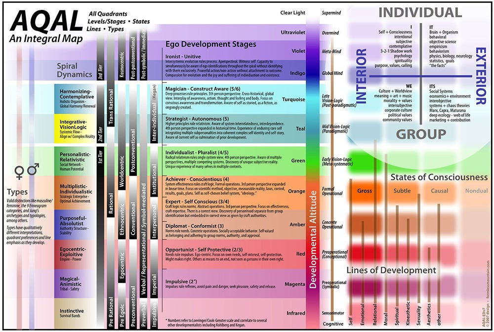
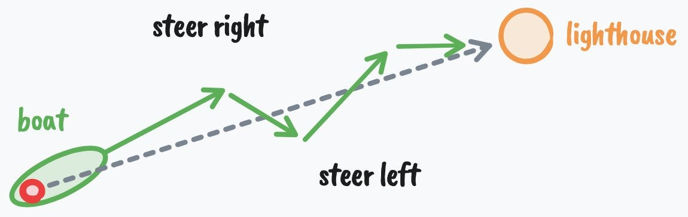

如何在 1 天内修复你整个人生
在 2026 年到来之前做这件事。
你的新年决心，大概率会被你自己放弃。
这没关系。大多数人都会放弃（研究显示 80-90% 的失败率），因为大多数人内心深处、骨子里，其实并不想改变。也就是说，他们用完全错误的方式去改变自己的人生。他们定新年决心，是因为别人也在定——人类想让他人刮目相看的欲望，往往超过想让自己刮目相看的欲望……我们从地位游戏中制造出一种表面的意义——但这些都不满足真正改变的要求。真正的改变，比"说服自己今年会更自律、更高效"深刻得多。
我不是来居高临下说教的。我放弃的目标，比我定下的多 10 倍。我认为对大多数人来说也应该是这样。但有一点是真实存在的：人们试图改变自己的生活，却几乎每次都彻底失败。失败到什么程度？健身房 1 月爆满、2 月恢复冷清，本身已经成了一个梗。
不过，尽管我觉得新年决心这东西很蠢，但审视你讨厌的现在的生活，永远都是明智的——这样你才能把自己发射向好得多的地方，这正是我们接下来要谈的。
人性是个混蛋。最糟糕的感觉，是你向自己许下承诺，却控制不住地一次次打破它。你开始感到无力，如果你不知道自己在做什么，你可能会让这个循环年复一年地转下去：永远想改变，却永远做不到。
所以，无论你是想开始创业、改造你的身体，还是想赌一把、走向更有意义的人生而不必两周就放弃——我想分享 7 个关于行为改变、心理学和生产力、你大概从未听过的想法，让你能在 2026 年真正做到这一点。
这会是一篇长文。
这不是那种你读完就忘的信。
这是你会想收藏、做笔记、专门留出时间慢慢想的东西。
最后那套协议——深入你的心理、挖出你人生真正想要什么——大约需要完整的一天来完成，但它带来的影响会远远长于那一天。
我只要求你把全部注意力放在这件事上。如果你觉得无聊，就跳到下一节，需要的话再回来补上。
我们开始。
（如果你更愿意看而不是读，我也把这封信做成了视频版。）
一、你不在你想去的地方，因为你不是会待在那里的人
说到新年决心，人们只关注成功两个条件中的一个：
- 改变你的行为，向目标推进（最不重要，二阶的）
- 改变你是谁，让行为自然而然地跟随（最重要，一阶的）
大多数人定一个表面目标，给自己打鸡血、在前几周保持自律，然后几乎不费力地退回老样子——因为他们试图在一片腐烂的地基上建造精彩的人生。
如果这不好理解，我们来看个例子。
想想一个成功的人。一个身材极好的健美运动员，一个身价数亿的创始人/CEO，或者一个魅力十足、能在一群人面前高谈阔论、脑子里一丝焦虑都没有的家伙。
你觉得那个健美运动员需要"咬牙坚持"才能吃健康食物吗？那位 CEO 需要靠自律才能出门、带领团队吗？表面上看，你也许会这么认为，但真相是他们无法想象自己以别的方式活着。那个健美运动员需要咬牙坚持的，是吃不健康的食物。那位 CEO 需要强迫自己做的，是过了闹钟还赖在床上，而且他们讨厌其中的每一秒。
在一些人眼里，我自己的生活有点极端、过度自律。对我来说，它是自然的，我说这话不是为了跟任何别的生活方式做对比。我就是喜欢这样活着。当我妈跟我说该休息一下、出去找点乐子的时候……我忍住没说："如果我不快乐，我为什么要做我现在做的这些事？"
下一句话，请认真听。
如果你想要某个特定的人生结果，你就必须在那之前就拥有造就那个结果的生活方式——远远早于你到达它的时刻。
有人说想减掉 30 磅（约 13.6 公斤），我通常不太信。不是我觉得他们没能力，而是因为太多次，同一个人会说"等减完肥，我就能重新开始享受生活了"。我不忍心告诉你，但如果你不能永久地采用那个带你减掉体重的生活方式，不能找到一个引力更强的理由来取代把你绑在旧生活方式上的那个理由，你就会直接回到起点，然后痛苦地承认：你浪费了唯一拿不回来的资源——时间。
当你真正改变自己时，所有不向目标推进的习惯都会变得令人作呕，因为你深刻地意识到，那些行为会复利成什么样的人生。你之所以能接受自己现在的标准，是因为你并不完全知道它们是什么、会把你带向哪里。我们会讨论如何挖掘出这种认知，但那需要一些铺垫。
你说你想改变。你说你想"实现财务自由"、想"变得健康"，但你的行为却在说明相反的事——而且有原因。这比你想象的深得多。
二、你不在你想去的地方，因为你并不真的想去那里
"只相信行动。生命发生在事件层面，而不是语言层面。只相信行动。"
—— 阿尔弗雷德·阿德勒
如果你想改变你是谁，你必须理解心智是如何运作的，这样你才能开始重新编程它。
理解心智的第一步，是理解所有行为都是目标导向的。仔细想想，这有点显而易见，但当我们深入挖的时候，大多数人不想听。
你向前迈一步，是因为你想到达某个地方。
你挠鼻子，是因为你想让痒消失。
这些都很清晰。但大多数时候，你的目标是无意识的。举个简单的例子：你可能没有意识到，大白天坐在沙发上，其实是在虚度下一个责任到来之前的时间。
在更无意识、更复杂的层面上，你在追求会伤害自己的目标，但你会用一种社会可接受的方式为自己的行为辩护，让自己看起来不像个失败者。
举个例子，如果你总是在拖延工作，你可能会用"我缺乏自律"来为自己辩护，但事实上，你一直在像往常一样试图达成某个目标。在这种情况下，那个目标可能是：保护自己，免受"完成并分享作品"所招致的评判。
如果你说你早就想辞掉这份看不到希望的工作，却没有任何真正的理由就留了下来，你可能会觉得自己不够勇敢，或者自己从来就不是个"敢冒险的人"。但真相是：你在追求安全、可预期，以及一个借口——好让你在同样做着无望工作的所有人面前，不至于像个失败者。
这里的教训是：真正的改变，需要改变你的目标。
我的意思不是设定某个表面目标——因为"设定目标"这个行为本身，往往服务于一个正在伤害你的无意识目标。生产力圈对这个已经讲过太多遍了。我的意思是改变你的观点。因为目标就是观点。目标是对未来的一次投射，它充当感知的透镜，让你注意到那些有助于你达成这个目标的信息、想法和资源。
现在让我们再挖深一点，因为如果你不理解这个，你只会陷得越来越难脱身。
三、你不在你想去的地方，因为你害怕自己真的到了那里
"你要记住最重要的一点：这个想法怎么来的、来自哪里，丝毫不重要。你可能从未见过职业催眠师，可能从未被正式催眠过。但如果你接受了某个想法——来自你自己、你的老师、你的父母、你的朋友、广告，或任何其他地方——并且你坚定地相信这个想法是真的，那它对你就有和催眠师的言语对被催眠者一样的力量。"
—— 麦克斯韦尔·马尔茨
你是如何变成今天的自己的，明天又将如何变成未来的自己。这是身份认同的解剖学：
- 你想要达成一个目标
- 你透过那个目标的透镜去感知现实
- 你只注意到那些"重要的"、能帮你达成目标的信息和想法（学习）
- 你朝目标行动，并收到"你正在逼近它"的反馈
- 你重复那些行为，直到它们变得自动且无意识（条件反射）
- 那些行为成为你以为的"你是谁"的一部分（"我是那种……的人"）
- 你捍卫自己的身份，以维持心理一致性
- 你的身份塑造新的目标，循环重新开始；而如果这个身份对美好生活是劣势，事情会很快变得很糟
不幸的现实是：你必须在第 6 步和第 7 步之间打断这个循环，而这个过程从你还是个孩子时就开始了。
你最初的目标是生存。
你依赖父母教你怎么活下去。你必须合群。而大多数人教育的方式是奖惩——除非你接受他们的信念和价值观，否则你就会受到惩罚。直到你看穿这一套，你才真正开始用自己的脑子思考。
但你的父母一辈子也都在经历同样的过程。危险就在这里：除非他们自己打破了这个模式，否则你的父母就是被工业时代那些被文化接受的"成功观"训练出来的。他们也带着来自他们的父母、他们的祖父母的最好和最坏的塑造。
再深一层：一旦你的身体生存需求被满足（在今天的世界里这相当容易，你几乎是生在安全里的），你开始在概念或意识形态的层面上"生存"。你可能不会再去试图保护和繁殖你的身体，但你绝对在保护和繁殖你的头脑。互联网上的观念战争不难看到，而参战的，是一个个的个人身份和群体身份。
当你的身体感到受威胁时，你会战或逃。
当你的身份感到受威胁时，同样的事会发生。
如果你和一个政治意识形态深度认同（通过我们刚才说的那个过程），当有人挑战你的信念时，你会感到受威胁。你是字面意义上地感到压力。情绪上，你感觉自己像刚被人扇了一巴掌。由于大多数人不会去检验自己的情绪是否真实，你往往会陷在回音室里，对那些伤害自己和他人的说法加倍下注。
如果你在一个宗教家庭长大，而且从未用自己的脑子思考过，你会去攻击那些威胁到那个小泡泡里你的心理安全感的人。
同样的事也会发生在你无意识地把自己看作律师、玩家，或其他不会为更好的生活采取行动的人身上。
四、你想要的生活，存在于特定的心智层级里
心智随时间演进，经过可预测的阶段。
你出生的时候，像一块求生的小海绵，尽可能吸收一切信念（其中很大一部分由你的文化决定），好让自己感到安全。而如果你不小心，你的心智可能会结晶固化，让你很难过上有意义的生活。
马斯洛需求层次、Greuter 的自我发展阶段、螺旋动力学等模型，已经对此做了足够的记录，它们彼此递进；而在社会中观察这一点，也并不困难。
我谈过很多次这些，并综合出了我自己的 Human 3.0 模型（链接），但作为复习，这里是自我发展 9 个阶段的 80/20 版本（因为重复能帮你注意到以前没注意到的东西，而且总有新读者在读这些信）：

- 冲动型——冲动和行动之间没有隔阂。非黑即白地思考。例如：一个幼儿生气时就打人，因为对小孩来说，感受和行为就是同一件事。
- 自我保护型——世界是危险的，你学会自保。例如：一个孩子学会藏成绩单、对家务撒谎、摸清大人想听什么。
- 从众型——你就是你的群体，它的规则感觉就是现实本身。例如：有人真心无法理解，为什么有人会投票投得跟家人或群体不一样。
- 自我觉察型——你注意到自己有一个与外在表现不符的内在世界。例如：坐在教堂里，你不确定自己是否相信周围的人所相信的东西，但还不知道该怎么处理这种感觉。
- 尽责型——你建立自己的原则体系，并据此要求自己。例如：仔细研究后离开家族信仰，采纳一套你能捍卫的个人哲学；或者因为相信"正确的努力会带来正确的结果"，而制定带有明确里程碑的职业规划。
- 个人主义型——你看到自己的原则是被处境塑造的，开始更松地持有它们。例如：意识到自己的政治观点跟长在哪里有关，多过跟客观真理有关；或者注意到自己雄心勃勃的职业目标，其实是为了赢得父亲的认可。
- 战略家型——你与系统协作，同时清楚自己也身处其中。例如：领导一个组织，同时主动质疑自己的盲区；或者参与政治，知道自己的视角是片面的、被你自己看不全的偏见塑造的。
- 框架自觉型——你把所有框架（包括你的身份）都看作有用的虚构。例如：以隐喻而非字面的方式持有你的灵性信念，知道地图不是疆域；或者带着一种温和的趣味，看着自己扮演"创始人"或"思想领袖"的角色。
- 合一型——自我与生命之间的隔阂消融。例如：工作、休息和玩耍感觉是同一件事。不再有一个需要"成为什么"的人，只有临在，对出现的一切做出回应。
对于读到这里的多数人，我猜你在 4 到 8 之间波动——这是一个巨大的区间。接近 8 的人读这篇文章，要么是想学点东西，要么是在打发时间。接近 4 的人则在真正寻找改变。你感觉自己注定能走得更远，但你还无法把一切想清楚，因为显然有很多东西在起作用。
好消息是，你处于哪个阶段其实不太重要，因为穿越任何一个阶段都遵循同一个模式。
五、智力，是从生活中得到你想要的东西的能力
"检验智力的唯一标准，是你能否从生活中得到你想要的东西。"
—— 纳瓦尔·拉维坎特
成功是有公式的。
一个成分是能动性。
一个成分是机会（很多人喜欢把它误认成"特权"——因为他们忽视了其他成分）。
最后一个成分是智力。
如果你能动性很高但机会很少，那么你朝目标行动的可能性再高也没用，因为那个目标不会结出多少果实。
如果你有机会和能动性，但智力低，你永远无法充分受益于那个机会。
首先，我们之前在这里谈过能动性。至于机会，我不能命令你改变物理位置，但如果你看不到就在你面前的海量数字机会，我也不知道该说什么了。
话说回来，我想聚焦于：在另外两个成分和这封信的语境下，智力是什么。
控制论（cybernetics）来自希腊语 kybernetikos，意思是"掌舵"或"擅长掌舵"。
它也被称为"得到你想要之物的艺术"。
所以，如果纳瓦尔对智力的定义是从生活中得到你想要的东西，那么理解控制论能帮你更快地做到。
控制论刻画了智能系统的特征：
- 拥有一个目标。
- 朝那个目标行动。
- 感知自己现在在哪里。
- 把它和目标对比。
- 然后根据反馈再次行动。

你可以用系统试错迭代和坚持的能力，来衡量它的智力。
一艘被吹偏航线的船，重新修正向目的地。恒温器感知到温度变化而启动。胰腺在血糖飙升后分泌胰岛素。
这和"从生活中得到你想要的东西"有什么关系？
关系就是：一切。
行动、感知、对比，以及从元视角理解系统——这是高智力的根基。
高智力是迭代、坚持和理解全局的能力。低智力的标志，是无法从自己的错误中学习。
低智力的人卡在问题上，而不是解决问题。他们一遇到路障就放弃。比如一个作家，建不起读者群就放弃了，因为他们没有尝试新事物、做实验、找到适合自己的流程的能力（"不存在一个你可以创造出来的有效流程"这种想法，是可以用事实证伪的，无论你有什么限制性信念——所以，这就是低智力。）
高智力是意识到：任何足够长的时间尺度上，任何问题都能被解决。事实是，你能达成任何你下定决心要达成的目标。这在合理范围内是无法被证伪的。
智力是意识到：存在一系列你可以做的选择，它们能带你抵达想要的那个目标。你理解想法是分层的，你不可能一步从莎草纸跳到 Google Docs。即使那个目标现在不可能，你也只是暂时没有达成它所需的资源——而这些资源可能会在未来几年里被发明出来。
当我谈论"目标"的时候——我会一直重复这点——我并不是从典型的自我提升视角出发，尽管那个视角有时很有用。
我是从目的论（teleology）的视角、从希腊语 kosmos 的视角出发——一切都有其目的。一切都是更大整体的一个部分。
目标决定你如何看待世界。
目标决定你把什么当作"成功"或"失败"。
你可以试着"享受过程"，但如果你追求的是错误的目标，你享受不了。
你的心智是现实的操作系统。
那个系统由目标构成。
对大多数人来说，那些目标是被分配给他们的。像一行行代码，编程进你的心灵。
去上学。找工作。感到被冒犯。扮演受害者。65 岁退休。
一条已知行不通的路。
要变得更聪明，你必须：
- 拒绝那条已知的路
- 潜入未知
- 设定更高的新目标，以扩张你的心智
- 拥抱混乱，允许成长
- 研究自然的一般原理
- 成为一个深度通才
这正好把我们带进下一节。
六、如何发射进一段全新的人生（1 天之内）
"我人生中最好的时期，总是出现在我对自己毫无进步感到彻底受够了之后。"
你怎么挖掘你的心智？
你怎么觉察到那些塑造你的条件与模式？
你怎么触达那些能改变你人生轨迹的深刻洞察和真相？
通过提问——一个简单却常常痛苦的行为。
这么少人做的事，而这一点从他们的说话方式、从他们对某个具体话题发表看法的方式就能看出来。提问就是思考，而很少有人真的在思考。
我想给你一套全面的协议，你可以每年用它重置一次人生，发射进一段高强度进步的季节。这套协议帮你问出正确的问题。
这些问题覆盖从宏观到微观：你想去哪里、你需要做什么才能到达、以及你能立刻做什么，开始推动指针向那个现实移动。
这需要完整的一天来完成，所以我建议你严格跟随协议。你需要一支笔、一张纸，和一个开放的心。
当我观察那些成功翻转身份的人的模式时，变化总是发生在张力积累之后的某个时刻，而且发生得很快。具体来说，我注意到人们会经历 3 个阶段：
- 失调——他们感觉自己不属于现在的生活，并且对自己的毫无进步受够了。
- 不确定——他们不知道接下来是什么，于是要么去实验，要么迷失，感觉更糟。
- 发现——他们发现自己要追求什么，并在 6 个月里做出 6 年的进步。
所以，这套协议的目标是：帮你到达失调的临界点，穿越不确定，发现你真正想要达成什么——清晰到压倒一切，让干扰不再有任何分量。
这套协议的结构可以一天内完成。早上，你做心理挖掘，挖出你自己隐藏的动机。白天，你用中断提醒自己，别回到自动驾驶，去思考你的人生。晚上，你把洞察综合成一个方向——明天开始，你就朝它移动。
我不能保证这对每个人都有效，因为我无法保证每个读到这里的读者，都处于自己故事的"那一章"——那个能让这些点真正起作用的章节。你不能把高潮放在书的开头，还指望它精彩。
第一部分）早上——心理挖掘——愿景与反愿景
首先，我们必须为你的心智创造一个新的框架——一个新的感知透镜，让它从中运作。
这就像造一个新的壳，离开旧的，然后随着时间慢慢长进新壳里。一开始它不会合身。这是好事。
留出 15-30 分钟（一支 YouTube 视频的长度……你做得到的），去思考并回答这些问题。不要试图把这番内省外包给 AI。我要你突破装在你心智上的那个限制器。如果你一时答不上来，晚点再回来。
- 你已经学会与之共处的，那种钝痛而持续的失望感是什么？不是深层的痛苦，而是你学会了忍受的东西。（如果你不恨它，你就会容忍它）
- 你反复抱怨、却从未真正改变的，是什么？写下过去一年你说得最多的 3 句抱怨。
- 对每一句抱怨：一个只观察你行为（而不是听你说话）的人，会得出你真正想要什么的结论？
- 关于你现在的生活，哪一个真相，会让你无法向一个你深深尊重的人承认？
这些问题，是为了让你觉察现在生活里的痛苦。现在，我们需要把它们变成我所说的"反愿景"——一种对你不想过的那种生活的残酷觉察。这样，你就可以用那股负能量，把你的努力瞄准正向，从内在动力的地方行动。
- 如果未来五年完全没有任何改变，描述一个普通的周二。你在哪里醒来？身体感觉如何？你脑子里第一个想法是什么？身边有谁？上午 9 点到下午 6 点你在做什么？晚上 10 点你感觉如何？
- 现在把时间拉到十年。你错过了什么？哪些机会关上了门？谁对你放弃了？当你不在场时，人们怎么说你？
- 你站在生命的尽头。你过的是安全版本的人生。你从未打破那个模式。代价是什么？你从未允许自己去感受什么、尝试什么、成为什么？
- 你的人生里，谁已经活在你刚才描述的那个未来里？同一条轨迹上领先你五、十、二十年的人？想到要成为他们，你感觉如何？
- 你真正要改变，就必须放弃哪一个身份？（"我是那种……的人"）不再做那个人，你在社交上要付出什么代价？
- 你一直没改变的，最令人难堪的理由是什么？那个让你听起来是软弱、恐惧或懒惰，而不是合理的理由？
- 如果你现在的行为是一种自我保护，你具体在保护什么？那份保护又在让你付出什么代价？
如果你诚实地回答了那些问题，如果你正处在人生的"那一章"，你会对现在的生活方式感到深层的不适，甚至厌恶。现在，我们需要把那股能量导向正向。我们需要创造一个最小可行愿景，因为你的愿景就像一个产品。它一开始是模糊的，但随着时间和经验，它会变得更强、更有力量。
- 先忘了现实性。如果你能打个响指，三年后就在过另一种人生——不是现实可行的那种，而是你真正想要的——一个普通的周二是什么样的？和上面第 5 题同级别的细节。
- 为了让那种生活感觉自然而不是勉强，你必须相信自己是什么样的人？写下身份陈述："我是那种……的人"
- 如果你已经是那个人了，这周你会做的第一件事是什么？
明天一早就回答所有这些。
第二部分）全天——打断自动驾驶——打破无意识模式
这些写日记的练习很可爱，但我们要的是真正的改变。
老实说，如果你不打破那些让你保持不变的无意识模式，真正的改变不会发生。
在这一整天里，我要你思考你在第一部分写下的所有东西。除此之外，我不要你忘了思考。请认真对待。你不会靠余生都做同样的事而改变。你需要有意识地强迫自己打破模式。
现在就花时间，在你的手机里创建提醒或日历事件。把问题本身写进提醒或事件里，这样你能立刻开始思考它。
提醒设置得越随机、越不与你的日程冲突，越好。
- 11:00am：我现在正在做的事，让我正在回避什么？
- 1:30pm：如果有人拍了过去两个小时，他们会得出"我想要什么样的人生"的什么结论？
- 3:15pm：我是在走向我讨厌的生活，还是走向我想要的生活？
- 5:00pm：我正在假装不重要的，最重要的事是什么？
- 7:30pm：今天我做的哪些事，是出于身份保护，而不是真正想要的？（提示：是你做的绝大多数的）
- 9:00pm：今天我什么时候感觉最活着？什么时候感觉最死气沉沉？
想给火再加点柴，就把这些问题安排在你通勤、散步或躺着的时候：
- 如果我不再需要别人把我看作[你写在第 10 题的身份]，什么会改变？
- 在我的生活里，我在哪些地方用鲜活感换安全？
- 我想成为的那个人，最小的版本是什么？明天我就能成为吗？
第三部分）晚上——综合洞察——进入一个进步的季节
如果你跟完了那个过程，我敢打赌你至少会有一个能改变你人生轨迹的深刻洞察。现在，我们需要让它们被说出口、把它们整合进"我们是谁"，并据以行动，开始把我们前往新的心智层级的旅程夯实。
- 过了今天，关于"你为什么一直卡住"，什么感觉最真实？
- 真正的敌人是什么？清楚地给它命名。不是环境。不是别人。是那个一直在幕后掌权的内在模式或信念。
- 写一句话，概括你拒绝让你的人生变成什么。这是压缩版的反愿景。读到它时，你应该会有感觉。
- 写一句话，概括你正在朝什么方向建造——同时知道它会演化。这是你的愿景 MVP。
最后，我们需要创造目标。
再说一遍，这些目标不是为了"达成"而设定的，因为目标只是投射。它们不可靠，会让你觉得自己被绑在某个必然会变的东西上。相反，把目标当作一个观点。一个可以更换的透镜，让你进入正确的心态，去执行那个让你离开不想要的生活的行动。不要担心什么终点线，因为我们会发现：它不存在。乐在其中，来自进步本身。
- 一年透镜：一年后，什么必须为真，你才能知道自己打破了旧模式？一件具体的事。
- 一个月透镜：一个月内，什么必须为真，一年后那个画面才仍有可能？
- 每日透镜：明天你可以时间块化的 2-3 个行动是什么——那些"你正在成为的那个人"会理所当然地做的事？
这内容很多。
希望对你有帮助。
但我们还有最后一块拼图，来锁定这一切。
跟着我。
七、把你的人生变成一个电子游戏
"内在体验的最优状态，是意识中井然有序的状态。当心理能量——或者说注意力——投入到现实的目标中，并且技能与行动的机会相匹配时，这种状态就会出现。追求目标会让意识变得有序，因为人必须把注意力集中在手头任务上，暂时忘掉其他一切。"
—— 米哈里·契克森米哈赖
你现在已经拥有了通向美好人生的所有组件。
现在，把你所有的洞察组织成一个连贯的计划，可能会有帮助。翻开新的一页，写下这 6 个组件：
- 反愿景——什么是我存在的噩梦，是我再也不想经历的人生？
- 愿景——我认为自己想要的理想人生是什么？在走向它的途中，它可以不断完善？
- 1 年目标——一年后我的生活是什么样子？那更接近我想要的人生吗？
- 1 个月项目——我需要学什么？我需要掌握什么技能？我能建造什么，让自己离 1 年目标更近？
- 每日杠杆——哪些是优先级的、能推动指针的任务，让我的项目更接近完成？
- 约束——从零开始实现愿景，我不愿意牺牲什么？
为什么这如此强大？
因为这些组件实际上为你创造了一个你自己的小世界。如果你在这个人生阶段就是该追求这个目标层级，你除了成为痴迷，别无选择。你会感觉到一种向更大之物的牵引。你不会再把别的东西当作选项。
你把人生变成了一个电子游戏。
因为游戏是痴迷、乐趣和心流的代言人。它们拥有通向专注与清晰的所有组件，所以如果我们反向工程出这些组件是什么，我们就能活在更深的乐趣、更少的干扰、更多的成功之中。
你的愿景是你赢的方式。至少在游戏演化之前。
你的反愿景是赌注。你输了或放弃，会发生什么。
你的 1 年目标是任务。这是你人生中唯一的优先级。
你的 1 个月项目是打 Boss。你如何获得经验值和战利品。
你的每日杠杆是任务。那个每天解锁新机会的过程。
你的约束是规则。那些激发创造力的限制。
这一切构成一组同心圆，像一个力场，把你的心智和干扰、和闪亮的东西隔开。
你玩得越多，这个力场就越强，很快它就成为你是谁——而你不想有任何别的方式。
一句话总结：改变不是行为问题，而是身份问题：行为跟着"你是谁"走，身份由目标塑造，而大多数目标只是别人编程进你心灵里的旧代码。用完整的一天——早上做心理挖掘（愿景与反愿景），白天用随机中断打断自动驾驶，晚上综合洞察、设定一年/一月/每日三层透镜——然后用反愿景、愿景、1 年目标、1 个月项目、每日杠杆、约束六个组件，把人生装进一个同心圆力场，像玩一个电子游戏一样活。
如果你想继续读：每个有野心的人都必须学会这项技能
谢谢阅读。
—— Dan